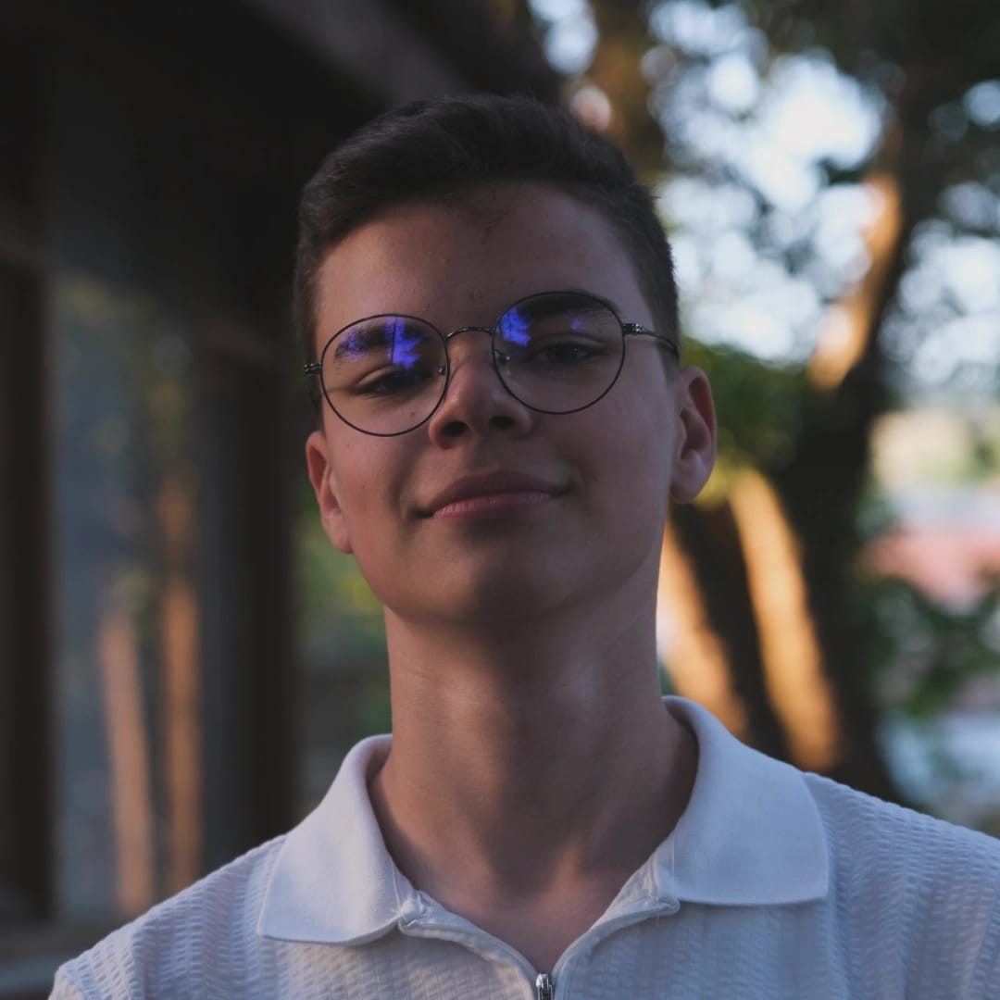

Burhan Şahin
Web Geliştiricisi - Ağ Uzmanı - Tasarımcı
Sinop Üniversitesi Ayancık Meslek Yüksekokulu'nda İnternet ve Ağ Teknolojileri programında öğrenim
görüyorum. Teknoloji ve yazılım dünyasına olan ilgim sayesinde bu alanda hem teorik hem de pratik bilgi
edinme fırsatı yakaladım. Web tasarımı, ağ teknolojileri ve yazılım geliştirme konularında kendimi sürekli
geliştirmeyi hedefliyorum. HTML, CSS, Python ve JavaScript gibi teknolojilerle projeler oluşturmayı ve
öğrendiklerimi pratiğe dökmeyi seviyorum. Ayrıca, görsel tasarımla ilgileniyor ve Photoshop ile InDesign
gibi araçları kullanarak yaratıcı projeler hazırlıyorum. Kariyerimde, teknoloji ve tasarımı birleştirerek
hem işlevsel hem de estetik çözümler üretmeyi amaçlıyorum. Boş zamanlarımda yeni teknolojiler keşfetmek,
tasarım trendlerini takip etmek ve kendimi ifade edebileceğim projeler üzerinde çalışmak en büyük tutkum. Bu site,hakkımda daha fazla bilgi sunmak amacıyla oluşturulmuştur..